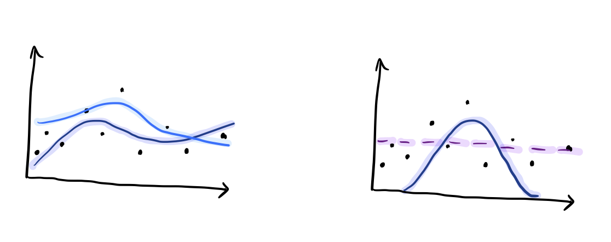

5. Model comparison (part I)
So far we have focussed on using a Bayesian workflow to design and develop a single model to describe our data. Much of the time, this will be enough to answer the scientific questions that we come across in our research. By using model checking to develop a model and verify that it is capable of representing the data, we are implicity using predictive performance to compare models, in a process of continuous model expansion.
However, there may be cases where it makes sense to compare two or more distinct models in a more discrete way. E.g. Models for the presence or absence of an effect, or signal over background models. Consider the following questions: > What signal shape best describes my data?
vs.
Is there signal in my data?

As we will discuss further, there are several different approaches to model comparison. The right one for the job will depend largely on what question you are trying to answer and what you know about the models that you are comparing.
The \(\mathcal{M}\)-universe
“All models are wrong but some are useful” - George Box
To get started in our model comparison journey, we should think about the set of models that we are trying to compare. We can group these into 3 different scenarios, as summarised below.
:math:`mathcal{M}`-closed: It is reasonable to assume that the true model is part of the set of models under consideration. You can assign prior probabilities to each model in the set.
This is the simplest case and is true of most textbook statistics problems.
:math:`mathcal{M}`-open: The data generating process is so complex, that we cannot imagine how the true model might be. In a way, there is no true model.
This is the worst-case scenario! Imagine trying to design a model to predict human behaviour, or one that is capable of generating the work of a famous author. One can look for patterns, but it doesn’t make sense to try and write down the mind of a person as a model.
:math:`mathcal{M}`-complete: It is reasonable to assume that a true model exists, but it is impossible to come up with a complete list of possible candidate models.
In practice, this is the case in which we find ourselves most of the time. M-closed problems tend to be too simple to be really interesting, whereas M-open ones are too complex to even attempt with these kind of methods.
In the M-complete view, it makes sense to work towards a good enough model that can represent our observations and anser our questions, as we have been doing so far in this workflow. However, one could also think about selecting between a finite set of models, that act as a proxy for a complete list of possible models.
It is important to note that many of the more standard and widely used methods for Bayesian model comparison that rely on the model marginal likelihood, \(p(\mathrm{data}|\mathrm{model})\), and/or model priors, \(p(\mathrm{model})\), assume that we are in the M-closed regime. As soon as we are not sure that we are in this regime, we should be very careful about interpreting the results of such approaches, and the further away we go, the worse it gets…
Computing the model marginal likelihood
Recall Bayes’ theorem
where we have expanded the expression to show the implicit conditioning on an underlying model, \(M\).
The model marginal likelihood, often also referred to as the Bayesian evidence is the term in the denominator
which normalises the posterior.
In our work with Stan and Hamiltonian Monte Carlo so far, we have been happily ignoring this term. We didn’t need our posterior to be normalised, we just cared about it’s shape for parameter estimation purposes.
So, if we are in the M-closed scenario and want to compute the marginal likelihood, it is non-trivial to re-use any results based on MCMC methods, although possibilities do exist…
The marginal likelihood is a natural byproduct of nested sampling methods, which has contributed to their popularity. We will discuss the use of nested sampling further in the next section of the course.
Model comparison as parameter estimation
If all of this has put you off model comparison, you’ll be relieved to find out that a lot of model comparison problems can similarly be expressed as parameter estimation problems. Here, we will explore a simple illustrative example in Stan.
Consider a uniform background model and a normal signal model for some data, \(x\):
or
Let’s say we have \(N\) independent observations, \(x_i\). We do not know if these observations are from the signal or background component, and we are interested in possibly identifying a signal component. We can build a mixture model likelihood for our observations, such that
where \(f\) is the unknown weight of the mixture model, or the fraction of data that can be associated with the signal component. As we don’t know \(f\) a priori, we can assume a uniform prior over it between 0 and 1.
Exercise 1 (5 points): Use this information to build a generative model for this simple problem. Simulate 10 observations of x, with an associated fraction of only 0.2. Histogram the resulting x observations.
[1]:
import numpy as np
from matplotlib import pyplot as plt
from cmdstanpy import CmdStanModel
import arviz as av
[2]:
N = 10
f = 0.2
# to be completed...
Exercise 2 (5 points): Write the Stan code for this model and display it. Then fit the model to your simulated data. Assume that both the mean and standard deviation of the signal distribution, \(\mu=0.5\), \(\sigma=0.2\), are known and therefore \(f\) is the only free parameter. Plot the marginal posterior for f.
Hint: See this page in the Stan manual for some tips.
[3]:
# to be completed...
Exercise 3 (5 points): Now repeat your simulation a few times, steadily increasing the number of observations. Visualise the effect this has on the resulting \(f\) distribution.
[4]:
# to be completed...
Homework exercise 1 (20 points): Let’s now assume that the signal position, \(\mu\) is unknown. Expand your model to also fit for the signal position. Repeat the above experiment for increasing the sample size, this time visualising the results in terms of the joint posterior for \(f\) and \(\mu\). For completeness, also simulate and fit the case of zero signal observations to add to this plot.
Some points to note:
If we wanted to make a decision about the presence of signal in this dataset, we could consider how “far away” the marginal distribution for \(f\) is away from zero, or how inconsistent \(f=0\) is with our results. This could be quantified if necessary.
By including \(\mu\) as a free parameter, our results for \(f\) also include our uncertainty in it’s value.
Further reading
Chapter 7 of Bayesian Data Analysis by Gelman et al.
Vehtari, A. & Ojanen, J. A survey of Bayesian predictive methods for model assessment, selection and comparison. Statistics Surveys 6, 142–228 (2012).
[ ]: